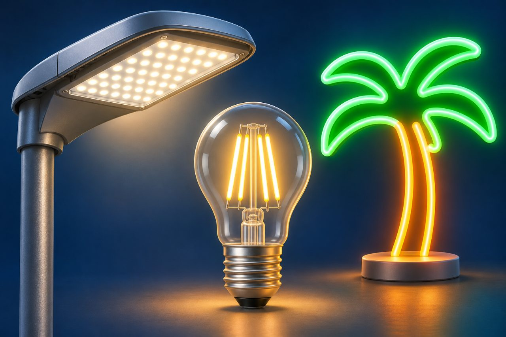

LEDs überall

Denk mal nach: Straßenlampe, „Glühbirne“ und leuchtende Palme sehen ganz verschieden aus. Was haben die drei gemeinsam?
In allen drei Lampen leuchten , kurz LEDs. Der Lampenkopf der Straßenlampe trägt Dutzende kleine LEDs. Die leuchtenden Stäbe in der „Birne“ bestehen aus vielen winzigen LEDs. Auch die Palme leuchtet mit LEDs.
Früher sah man LEDs nur als winzige Kontrolllämpchen, zum Beispiel am Fernseher. Heute ersetzen sie und Energiesparlampen.
LEDs stecken in Taschenlampen, Fahrradlichtern, Partylichtern, Autoscheinwerfern und Straßenlampen – und in den von Smartphones, Fernsehern und Monitoren.
Warum hat die LED die Glühlampe verdrängt? Das zeigt der Vergleich unten. Achte auf die : Sie sagt, wie viel Energie eine Lampe in jeder Sekunde braucht.
Schalte nacheinander beide Lampen ein. Sie leuchten gleich hell. Vergleiche Leistung, Wärme und Lebensdauer.
| Lampe | Helligkeit | Leistung | Wärme am Glas | Lebensdauer |
|---|
MERKE
- LEDs (Leuchtdioden) findest du heute fast überall: in Lampen, Displays, Taschenlampen, Autoscheinwerfern und Straßenlampen.
- Vorteile gegenüber Glühlampen: LEDs brauchen viel weniger Energie, werden nicht so heiß, halten viel länger und es gibt sie in allen Bauformen, Lichtstärken und Lichtfarben.
- Glühlampen machen den größten Teil der Energie zu Wärme. Für den Haushalt dürfen sie in Europa nicht mehr hergestellt werden.
Glühlampe oder LED?
Tippe eine Karte an und dann die passende Lampe.
Die LED richtig anschließen
Eine LED ist kein kleines Glühlämpchen, sondern ein . Sie leuchtet nur, wenn sie richtig ist.
Schau dir die beiden Drähte an: Einer ist länger. Der lange Draht kommt an den Pluspol der Batterie, der kurze Draht an den Minuspol. Fachleute nennen die Plus-Seite und die Minus-Seite . Ist die LED andersherum angeschlossen, bleibt sie dunkel. Sie lässt den Strom nur in einer Richtung durch.
Nie ohne Schutzwiderstand! Eine LED verträgt nur wenig Strom. Deshalb baut man vor sie einen ein. Er begrenzt die .
Für eine rote LED an einer 4,5-V-Batterie passt zum Beispiel ein Widerstand mit 220 Ω (Ohm). Im Schaltplan zeichnet man die LED mit ihrem : ein Dreieck mit einem Strich und zwei kleinen Pfeilen. Die Pfeile zeigen vom Bauteil weg – sie stehen für das Licht.
Probiere alle drei Versuche aus. Bei jedem Versuch kommt eine neue LED in die Schaltung.
| Versuch | Beobachtung |
|---|
MERKE
- LEDs sind elektronische Bauteile. Sie leuchten nur, wenn sie richtig gepolt sind: langer Draht (Anode) an den Pluspol, kurzer Draht (Kathode) an den Minuspol.
- Andersherum leuchtet die LED nicht. Sie lässt den Strom nur in einer Richtung durch.
- Eine LED braucht immer einen Schutzwiderstand. Er begrenzt die Stromstärke. Ohne ihn wird die LED zu heiß und geht kaputt.
- Schaltzeichen der LED: Dreieck mit Strich und zwei Pfeilen nach außen.
So schließt du eine LED an
Tippe zuerst auf eine Lücke, dann auf das passende Wort. Zwei Wörter bleiben übrig.
Was passiert mit der LED?
Schau genau hin: Ist der lange Draht mit dem Pluspol oder mit dem Minuspol verbunden? Gibt es einen Schutzwiderstand?
Dioden – eine Einbahnstraße für Strom
Nicht jede leuchtet. In fast jedem elektronischen Gerät stecken Dioden ohne Licht, die . Meist sind es kleine schwarze Zylinder mit zwei Drähten.
Ein heller Ring markiert die Minus-Seite der Diode, also ihre Kathode. Im Schaltzeichen steht dafür der Strich.
Wie eine Einbahnstraße: Eine Diode lässt den Strom nur in einer Richtung durch.
Ist die Minus-Seite der Diode (der Ring) mit dem Minuspol der Batterie verbunden, fließt Strom. Die Diode steht in . Dreht man die Batterie oder die Diode um, fließt kein Strom. Die Diode steht in .
Das Lämpchen leuchtet. Drehe die Batterie oder die Diode um und beobachte das Lämpchen. Probiere beide Knöpfe aus.
| Lämpchen | Der Ring (Minus-Seite der Diode) ist verbunden mit dem … | So heißt das |
|---|
Was weißt du über Dioden?
Dioden schützen Geräte
Smartphones, Uhren, Kopfhörer oder Blutdruckmessgeräte laufen mit Batterien oder Akkus. Legt jemand die Batterien falsch herum ein, könnte der Strom verkehrt herum durch die Elektronik fließen und sie beschädigen. Eine Diode verhindert das: Sie lässt den Strom nur in der richtigen Richtung durch.
MERKE
- Dioden lassen den Strom nur in einer Richtung durch – wie eine Einbahnstraße.
- Der Ring markiert die Minus-Seite (Kathode) der Diode, im Schaltzeichen ist es der Strich.
- Durchlassrichtung: Minus-Seite der Diode zum Minuspol der Batterie → Strom fließt. Sperrrichtung: andersherum → kein Strom.
- Dioden schützen Geräte vor falsch eingelegten Batterien.
Erkläre in eigenen Worten ✨ KI prüft
Schreibe ganze Sätze oder Stichpunkte. Die KI achtet nur auf den Inhalt, nicht auf die Rechtschreibung.
Aus Wechselstrom wird Gleichstrom
Eine Batterie liefert : Die Elektronen fließen immer in dieselbe Richtung – vom Minuspol durch den Stromkreis zum Pluspol.
Die Steckdose liefert : Die Elektronen ändern ständig ihre Richtung. Sie schwingen 50-mal in der Sekunde hin und her.
Smartphones, Computer und Fernseher arbeiten aber nur mit Gleichstrom. Darum stecken in ihrem oder Ladegerät Dioden.
Die Dioden lassen nur den Teil des Wechselstroms durch, der in Durchlassrichtung fließt. Den anderen Teil sperren sie. Sichtbar wird das mit einem . Hinter der Diode bleibt nur eine Hälfte der Welle übrig: die positiven .
Wähle einen Versuch. Das Oszilloskop zeigt die Spannung am Lämpchen.
| Versuch | Bild auf dem Oszilloskop | Der Strom fließt … |
|---|
MERKE
- Batterien und Akkus liefern Gleichstrom (immer dieselbe Richtung). Die Steckdose liefert Wechselstrom (die Richtung wechselt ständig).
- Smartphones, Computer und Fernseher brauchen Gleichstrom.
- Dioden lassen nur den Teil des Wechselstroms durch, der in Durchlassrichtung fließt. So wird aus Wechselstrom Gleichstrom – im Netzteil oder Ladegerät.
- Oszilloskop: Vor der Diode zeigt es eine Welle mit Bergen und Tälern, hinter der Diode nur noch die positiven Halbwellen.
Von der Steckdose in den Akku
Mia lädt ihr Smartphone. Bringe die Schritte mit den Pfeilen in die richtige Reihenfolge.
Erkläre in eigenen Worten ✨ KI prüft
Schreibe ganze Sätze oder Stichpunkte. Die KI achtet nur auf den Inhalt, nicht auf die Rechtschreibung.
Training
Löse das Kreuzworträtsel
Tippe in ein Kästchen und schreibe. Tippst du ein Kästchen zweimal an, wechselt die Richtung. Ä schreibst du als AE. Hängst du fest? Bei jeder Frage hilft 💡 Tipp – erst ein Hinweis, dann der Anfangsbuchstabe. Mit 📋 Wörter zeigen siehst du alle Lösungswörter.
Kreuze an
Profi-Check, Lernkarten und Regelheft
Diode und Leuchtdiode
LED = Leuchtdiode. Vorteile gegenüber der Glühlampe: viel weniger Energie · wird nicht so heiß · viel längere Lebensdauer · alle Bauformen, Lichtstärken und Lichtfarben.
LED richtig anschließen: langer Draht (Anode) an den Pluspol, kurzer Draht (Kathode) an den Minuspol – andersherum leuchtet sie nicht. Immer mit Schutzwiderstand: Er begrenzt die Stromstärke.
| Begriff | Bedeutung |
|---|---|
| Diode | lässt Strom nur in einer Richtung durch (Einbahnstraße); Ring = Minus-Seite (Kathode) |
| Durchlassrichtung | Minus-Seite der Diode zum Minuspol → Strom fließt |
| Sperrrichtung | andersherum → kein Strom |
| Gleichrichten | Dioden machen aus Wechselstrom Gleichstrom (Netzteil, Ladegerät) |
Dioden schützen Geräte vor falsch eingelegten Batterien. Auf dem Oszilloskop bleiben hinter der Diode nur die positiven Halbwellen.
Wortspeicher
Alle Fachbegriffe dieses Moduls auf einen Blick.
Wie geht es weiter?
Eine Diode kann den Strom durchlassen oder sperren – mehr nicht. Ein Transistor kann mehr: Mit einem kleinen Strom steuert er einen großen. So wird er zum Schalter oder zum Verstärker. Das erfährst du in Modul 4.